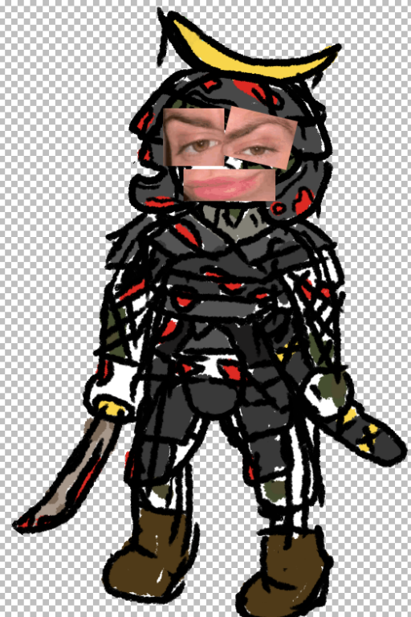
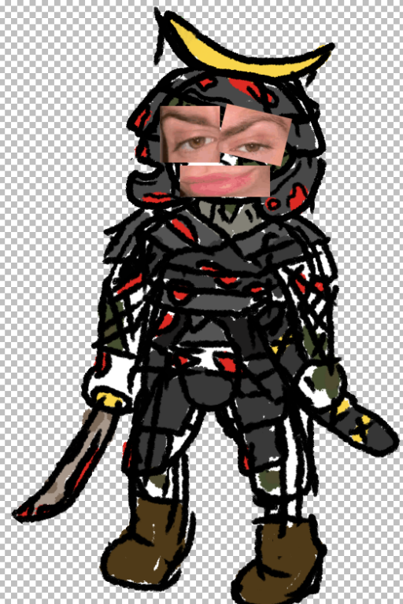

СИЛ 13 (+1); ЛОВ 15 (+2); ТЕЛ 12 (+1);
ИНТ 10 (+0); МУД 11 (+0); ХАР 14 (+2);
Сопротивления: —
Уязвимости: Алкогольная зависимость
- Прочие характеристики -
Размер существа: Средний
Тип: Нежить
Ячейки: 2+Ур
Основная характеристика: Ловкость
- Снаряжение и лут -
Сейшу вооружена самурайской бронёй идентичной Кевларовому бронежилету, ручным дробовиком и именной катаной Абусан. Убить её нельзя.
- Действия -
Атака. Действие. Сейшу может атаковать своей катаной Абусан, или своим ручным дробовиком.
Спектральные ножи. Заговор. Сейшу создаёт, и отдельными проверками заклинания бросает 3 спектральных ножа, наносящих [Ур]к4 урона. Этот заговор можно использовать бонусным действием вместо основного, но в таком случае будет брошен лишь 1 нож.
Ход 20 калибра. Способность. Сейшу достаёт из кабуры свой ручной дробовик (характеристиками идентичен Обрезу Дикаря, за исключением увеличенного магазина), и совершает ей атаку, которая дополнительно наносит 2к6 урона и имеет увеличенную на 30 фт дальность.
Самоуничтожение. Способность. Сейшу протыкает свой живот катаной, и умирает. Здоровье при этом не отнимается, а сама Сейшу переходит в Спектральное состояние: в течение 5 раундов Сейшу получает эффект Исчезновение, а также ей невозможно нанести урон. В этом состоянии, каждый ход, чей бы он ни был, Сейшу может передвинуться на расстояние до 20 фт, а также 1 раз метнуть спектральный нож, или совершить атаку Абусаном. Сейшу может прервать этот эффект когда ей необходимо.
- Умения -
В глазницы мне смотри. Умение. Тёмное зрение. На расстоянии в 60 футов вы при тусклом освещении можете видеть так, как будто это яркое освещение, и в темноте так, как будто это тусклое освещение. В темноте вы не можете различать цвета, только оттенки серого.
Гнилозубие. Умение. В случае смерти вы можете 1 раз возродиться с 1 здоровьем. Если от вашего тела отделили (но не уничтожили) ногу или руку, во время продолжительного отдыха вы можете любым доступным способом (будь то, например, прикрепить степлером или закрепить бинтом) прикрепить отделённую часть на место, и через 12 часов она снова станет полностью функциональной.
Крутяк. Умение. Любые Дробовики имеющие свойство Обрез можно использовать как Лёгкое оружие дальнего боя, т.е. использовать одной рукой.
"Молодой человек, а вы какого хуя тут забыли?"
— Сейшу Кадзё